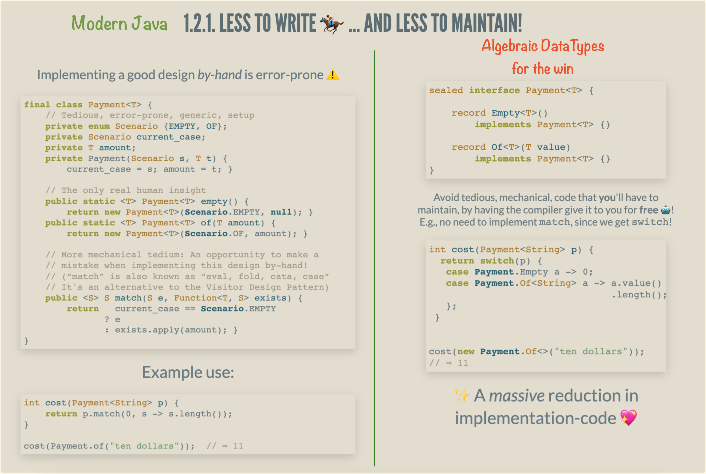

Here are some of my latest thoughts… such as thread-first and loop (•̀ᴗ•́)و

1. Clojure-style accessor in Emacs Lisp emacs lisp clojure programming_languages

3. Islam, Play, and Work life islam
Islam, Play, and Work

What is Islam's perspective on the notion of play, leisure, and how does it relate to the Montessori school of thought?
4. Java CheatSheet :java:cheat-sheet:
Java CheatSheet


Modern Java is a strongly-typed, eagery evaluated, case sensative, yet whitespace insensative language. It uses hierarchies of classes/types to structure data, but also has first-class support for functional-style algebraic datatypes.
Java programs are made up of ‘classes’, classes contain methods, and methods contain commands. To just try out a snippet of code, we can
Open a terminal and enter
jshell; then enter:1 + 2 // The jshell lets you try things out! // Say hello in a fancy way import javax.swing.*; JOptionPane.showMessageDialog(new JFrame(), "Hello, World!");
- Alternatively, in IntelliJ, click Tools then Groovy Console to try things out!
- Finally, VSCode allows arbitrary Java code to be sent to a
jshellin the background(!) and it echoes the result in a friendly way.
In order to run a java program, it must have a main method as an entry point.
public class LearnJava { // In order to run a java program, it must have a main method as an entry // point. public static void main(String[] args) { System.out.println("Hello World!"); // Use System.out.printf() for easy formatted printing. System.out.printf("pi = %.5f", Math.PI); // => pi = 3.14159 } }
4.1. Web reference ignore
5. 💐 Repl Driven Development: Editor Integrated REPLs for all languages 🔁 :repl-driven-development vscode emacs javascript java python lisp clojure haskell arend purescript idris racket
💐 Repl Driven Development: /Editor Integrated REPLs for all languages/ 🔁

The package makes the philosophy of REPL Driven
Development (RDD) accessible to any language that has a primitive CLI repl: The
result is an Emacs interface for the language, where code of your choosing is
evaluated, and results are echoed at your cursor in overlays.
That is, with Repl aided development, you make software by starting with an already working program (i.e., the repl) then incrementlly “teach it” to be the program you want, by defining & redefining things. Until satisfied, loop: Type/modify code in your editor, press some keys to evaluate what you wrote/modified in the currently running system, and explore/test the resulting runtime.
RDD is programming emphasising fast & rich feedback from a running system. RDD is fantastic for quickly teaching/exploring an idea; as such, the running example of this article will be on servers —no prior experience with servers is assumed. The main examples will be in JavaScript, Python, and Java. (Since JavaScript is just Lisp in C clothing, we will not discuss Lisp.) Since Java is verbose, the power of REPLs really pays off when exploring a new idea. We see how many imports and setup-code simply disappear in the RDD approach, letting you focus on the core idea you're exploring/teaching. For comparison, a traditional self-contained Java server program is ~30 lines long whereas the focused RDD approach is ~4 lines long.

tdlr: This library provides the Emacs built-in C-x C-e behaviour for arbitrary languages, provided they have a primitive cli REPL.

7. A Brisk Introduction to Karate karate
A Brisk Introduction to Karate

What are the basic forms of Karate? What is Karate?
“The ultimate aim of karate lies not in victory or defeat but in the perfection of the character of its participants … to subdue the enemy without fighting is the highest skill, know your enemy and know yourself, in a hundred battles you will not be defeated” says Gichin Funakoshi —known as The Father of Modern Karate.
Karate means “empty hand” and was developed on the island of Okinawa —part of modern-day Japan. The major styles (“Ryu”) are Shotokan, Wado-ryu, Shito-ryu, and Goju-ryu —many other styles of Karate are derived from these four. I'm focusing on Goju-Ryu in this article: Goju-Ryu was founded by Chojun Miyagi; whose colleague, Gichin Funakosi, founded Shotokan-Ryu.

Occasionally one sees Karate-Do, which means “the way of the empty hand”. This usage is a reminder that Karate is not just about fighting, but is also a spiritual discipline.
The basic form of Goju-Ryu karate is Sanchin, “3 battles”: The battles of the mind, the body, and the spirit. However, this was considered a bit difficult for beginners, and so new forms were needed as a way of introducing fundamental karate forms to a wider audience. There are the “peaceful and safe” forms known as Pinan/Heian, the “first course” or Taikyoku forms, the “popularising forms” known as Fukyugata —the second of which was rebranded as “attack & smash”, Gekaisai— and, finally, there is the so-called Dachi-waza form. This last one is relatively new, and aims to be a smooth introduction to the world of forms/Kata.
In this article, I'd like to discuss the basic forms and their relationships.

8. My Family Tree family

10. A Brisk Introduction to the Fundamentals of Arabic Grammar, نحو arabic
A Brisk Introduction to the Fundamentals of Arabic Grammar, نحو

In short: In English sometimes we mess-up between “I/me/my”, likewise in Arabic we might mess up with “ابو / ابا / ابي”: These are just اب followed by one of ا/ي/و (which are the pronounced case endings!)
~ ~ ~ ~ ~ ~ ~
How do Arabs say the English “a/an/the”, as in “an apple” or “the chair”? Easy! By default, all words are indefinite (“a/an”); and made definite (“the”) by adding الـ to the front of the word.
But… there's some subtleties, which first require us to discuss vowel markings… which also change if the feminine marker ة is used, so we also need to briefly discuss gender.
English relies on word order for meaning; for example, Jim hit Bob is a sentence where the person doing the action is Jim and we know it has to be Jim, and not Bob, since Jim is the word before the action hit. However, in Arabic words can be ordered in almost any way you like! Then how do we identifiy who does an action? We use case markings: We add small symbols to the end of words to indiciate the role they play in a sentence.
With vowel markings, we can finally flesh-out the nature of “a/an/the” in Arabic… but then something wild happens if we stick an (in)definite followed by a definite! We get the concepts of ownership and complete sentences that don't need a verb!
Finally, we conclude with an explanation of why in the world English Qurans use the single word muslim where's Arabic Qurans use both مسلمون and مسلمين.
11. Arabic Roots: The Power of Patterns arabic javascript emacs
Arabic Roots: The Power of Patterns

I want to quickly introduce the Arabic language, through its “root system” —i.e., most words have 3-letters at their core— and how these roots can be placed in “patterns” to obtain new words.
I'd like to take a glance at Arabic's Verb Forms: These give you 10 words for each root!
Some interesting concepts will also be mentioned, for those curious, but should be ignored on a first reading. These will be hidden away in clickable/foldable regions.
These are notes of things that I'm learning; there's likely errors.
12. Glossary of Arabic Linguistic Terms arabic
Glossary of Arabic Linguistic Terms
Definitions, and discussions, of jargon relating to learning the Arabic language.
13. Arabic Cartoons family arabic javascript

{kind=link}
14. 💐 Making VSCode itself a Java REPL 🔁 :repl-driven-development vscode emacs javascript java python ruby clojure typescript haskell lisp
💐 Making VSCode itself a Java REPL 🔁

VSCode evaluates Java code wherever it sees it, by sending it to a JShell in the background, and echos the results in a friendly way!
This is achieved with a meta-extension for VSCode that makes VSCode into a living, breathing, JS interpreter: It can execute arbitrary JS that alters VSCode on-the-fly. (Inspired by using Emacs and Lisp!)
The relevant docs show how to make a similar REPL for Python, Ruby, Clojure, Common Lisp, JavaScript, Typescript, Haskell, and of-course Java.
15. 💐 VSCode is itself a JavaScript REPL 🔁 :repl-driven-development vscode emacs javascript
💐 VSCode is itself a JavaScript REPL 🔁

A meta-extension for VSCode that makes VSCode into a living, breathing, JS interpreter: It can execute arbitrary JS that alters VSCode on-the-fly. A gateway into the world of Editor Crafting!
| (Inspired by using Emacs and Lisp!) |
16. Typed Lisp, A Primer :types:lisp:program-proving emacs
Typed Lisp, A Primer

Ξ
- 1. Clojure-style accessor in Emacs Lisp emacs lisp clojure programming_languages
- 2. /home/runner/work/alhassy.github.io/alhassy.github.io/MathJaxPreamble.org
- 3. Islam, Play, and Work life islam
- 4. Java CheatSheet :java:cheat-sheet:
- 5. 💐 Repl Driven Development: Editor Integrated REPLs for all languages 🔁 :repl-driven-development vscode emacs javascript java python lisp clojure haskell arend purescript idris racket
- 6. Arabic CheatSheet :arabic:cheat-sheet:
- 7. A Brisk Introduction to Karate karate
- 8. My Family Tree family
- 9. Arabic Learning, eventually to be in articles of their own
- 10. A Brisk Introduction to the Fundamentals of Arabic Grammar, نحو arabic
- 11. Arabic Roots: The Power of Patterns arabic javascript emacs
- 12. Glossary of Arabic Linguistic Terms arabic
- 13. Arabic Cartoons family arabic javascript
- 14. 💐 Making VSCode itself a Java REPL 🔁 :repl-driven-development vscode emacs javascript java python ruby clojure typescript haskell lisp
- 15. 💐 VSCode is itself a JavaScript REPL 🔁 :repl-driven-development vscode emacs javascript
- 16. Typed Lisp, A Primer :types:lisp:program-proving emacs
- 17. Have you ever packaged anything? :packages:dependent-types:
- 18. An Interactive Way To C :program-proving:c:emacs:frama-c:
- 19. Graphs are to categories as lists are to monoids :category-theory agda types
- 20. Discovering Heyting Algebra :order-theory:category-theory:
Let's explore Lisp's fine-grained type hierarchy!
We begin with a shallow comparison to Haskell, a rapid tour of type theory, try in vain to defend dynamic approaches, give a somewhat humorous account of history, note that you've been bamboozled —type's have always been there—, then go into technical details of some Lisp types, and finally conclude by showing how macros permit typing.
Goals for this article:
- Multiple examples of type constructions in Lisp.
- Comparing Lisp type systems with modern languages, such as Haskell.
- Show how algebraic polymorphic types like
PairandMaybecan be defined in Lisp. Including heterogeneously typed lists! - Convey a passion for an elegant language.
- Augment Lisp with functional Haskell-like type declarations ;-)
Unless suggested otherwise, the phrase “Lisp” refers to Common Lisp as supported by Emacs Lisp. As such, the resulting discussion is applicable to a number of Lisp dialects —I'm ignoring editing types such as buffers and keymaps, for now.
17. Have you ever packaged anything? :packages:dependent-types:
Have you ever packaged anything?
{kind=link}
Ξ
- 1. Clojure-style accessor in Emacs Lisp emacs lisp clojure programming_languages
- 2. /home/runner/work/alhassy.github.io/alhassy.github.io/MathJaxPreamble.org
- 3. Islam, Play, and Work life islam
- 4. Java CheatSheet :java:cheat-sheet:
- 5. 💐 Repl Driven Development: Editor Integrated REPLs for all languages 🔁 :repl-driven-development vscode emacs javascript java python lisp clojure haskell arend purescript idris racket
- 6. Arabic CheatSheet :arabic:cheat-sheet:
- 7. A Brisk Introduction to Karate karate
- 8. My Family Tree family
- 9. Arabic Learning, eventually to be in articles of their own
- 10. A Brisk Introduction to the Fundamentals of Arabic Grammar, نحو arabic
- 11. Arabic Roots: The Power of Patterns arabic javascript emacs
- 12. Glossary of Arabic Linguistic Terms arabic
- 13. Arabic Cartoons family arabic javascript
- 14. 💐 Making VSCode itself a Java REPL 🔁 :repl-driven-development vscode emacs javascript java python ruby clojure typescript haskell lisp
- 15. 💐 VSCode is itself a JavaScript REPL 🔁 :repl-driven-development vscode emacs javascript
- 16. Typed Lisp, A Primer :types:lisp:program-proving emacs
- 17. Have you ever packaged anything? :packages:dependent-types:
- 18. An Interactive Way To C :program-proving:c:emacs:frama-c:
- 19. Graphs are to categories as lists are to monoids :category-theory agda types
- 20. Discovering Heyting Algebra :order-theory:category-theory:
Herein I try to make my current doctoral research accessible to the average person: Extending dependently-typed languages to implement module system features in the core language. It's something I can direct my family to, if they're inclined to know what it is I've been doing lately.
The technical matter can be seen at the associated website ─The Next 700 Module Systems─ which includes a poster, slides, and a demo.
Excluding the abstract, this is my thesis proposal in three minutes (•̀ᴗ•́)و
18. An Interactive Way To C :program-proving:c:emacs:frama-c:
An Interactive Way To C

Ξ
- 1. Clojure-style accessor in Emacs Lisp emacs lisp clojure programming_languages
- 2. /home/runner/work/alhassy.github.io/alhassy.github.io/MathJaxPreamble.org
- 3. Islam, Play, and Work life islam
- 4. Java CheatSheet :java:cheat-sheet:
- 5. 💐 Repl Driven Development: Editor Integrated REPLs for all languages 🔁 :repl-driven-development vscode emacs javascript java python lisp clojure haskell arend purescript idris racket
- 6. Arabic CheatSheet :arabic:cheat-sheet:
- 7. A Brisk Introduction to Karate karate
- 8. My Family Tree family
- 9. Arabic Learning, eventually to be in articles of their own
- 10. A Brisk Introduction to the Fundamentals of Arabic Grammar, نحو arabic
- 11. Arabic Roots: The Power of Patterns arabic javascript emacs
- 12. Glossary of Arabic Linguistic Terms arabic
- 13. Arabic Cartoons family arabic javascript
- 14. 💐 Making VSCode itself a Java REPL 🔁 :repl-driven-development vscode emacs javascript java python ruby clojure typescript haskell lisp
- 15. 💐 VSCode is itself a JavaScript REPL 🔁 :repl-driven-development vscode emacs javascript
- 16. Typed Lisp, A Primer :types:lisp:program-proving emacs
- 17. Have you ever packaged anything? :packages:dependent-types:
- 18. An Interactive Way To C :program-proving:c:emacs:frama-c:
- 19. Graphs are to categories as lists are to monoids :category-theory agda types
- 20. Discovering Heyting Algebra :order-theory:category-theory:
Do you know what the above program accomplishes? If you do, did you also spot a special edge case?
We aim to present an approach to program proving in C using a minimal Emacs setup so that one may produce literate C programs and be able to prove them correct –or execute them– using a single button press; moreover the output is again in Emacs.
The goal is to learn program proving using the Frama-C tool –without necessarily invoking its gui– by loading the source of this file into Emacs then editing, executing, & proving as you read along. One provides for the formal specification of properties of C programs –e.g., using ACSL– which can then be verified for the implementations using tools that interpret such annotation –e.g., Frama-C invoked from within our Emacs setup.
Read on, and perhaps you'll figure out how to solve the missing FixMe pieces 😉
The intent is for rapid editing and checking. Indeed, the Frama-c gui does not permit editing in the gui, so one must switch between their text editor and the gui. Org mode beginning at the basics is a brief tutorial that covers a lot of Org and, from the get-go, covers “the absolute minimum you need to know about Emacs!”
If anything, this effort can be construed as a gateway into interactive theorem proving such as with Isabelle, Coq, or Agda.
The article aims to be self-contained —not even assuming familiarity with any C!
The presentation and examples are largely inspired by
- Gilles Dowek's exquisite text Principles of Programming Languages.
- It is tremendously accessible!
- Allan Blanchard's excellent tutorial Introduction to C Program Proof using Frama-C and its WP Plugin.
Another excellent and succinct tutorial is Virgile Prevosto's ACSL Mini-Tutorial. In contrast, the tutorial ACSL By Example aims to provide a variety of algorithms rendered in ACSL.
There are no solutions since it's too easy to give up and look at the solutions that're nearby. Moreover, I intend to use some of the exercises for a class I'm teaching ;-)
19. Graphs are to categories as lists are to monoids :category-theory agda types
Graphs are to categories as lists are to monoids

Ξ
- 1. Clojure-style accessor in Emacs Lisp emacs lisp clojure programming_languages
- 2. /home/runner/work/alhassy.github.io/alhassy.github.io/MathJaxPreamble.org
- 3. Islam, Play, and Work life islam
- 4. Java CheatSheet :java:cheat-sheet:
- 5. 💐 Repl Driven Development: Editor Integrated REPLs for all languages 🔁 :repl-driven-development vscode emacs javascript java python lisp clojure haskell arend purescript idris racket
- 6. Arabic CheatSheet :arabic:cheat-sheet:
- 7. A Brisk Introduction to Karate karate
- 8. My Family Tree family
- 9. Arabic Learning, eventually to be in articles of their own
- 10. A Brisk Introduction to the Fundamentals of Arabic Grammar, نحو arabic
- 11. Arabic Roots: The Power of Patterns arabic javascript emacs
- 12. Glossary of Arabic Linguistic Terms arabic
- 13. Arabic Cartoons family arabic javascript
- 14. 💐 Making VSCode itself a Java REPL 🔁 :repl-driven-development vscode emacs javascript java python ruby clojure typescript haskell lisp
- 15. 💐 VSCode is itself a JavaScript REPL 🔁 :repl-driven-development vscode emacs javascript
- 16. Typed Lisp, A Primer :types:lisp:program-proving emacs
- 17. Have you ever packaged anything? :packages:dependent-types:
- 18. An Interactive Way To C :program-proving:c:emacs:frama-c:
- 19. Graphs are to categories as lists are to monoids :category-theory agda types
- 20. Discovering Heyting Algebra :order-theory:category-theory:
Numbers are the lengths of lists which are the flattenings of trees which are the spannings of graphs. Unlike the first three, graphs have two underlying types of interest –the vertices and the edges– and it is getting to grips with this complexity that we attempt to tackle by considering their ‘algebraic’ counterpart: Categories.
In our exploration of what graphs could possibly be and their relationships to lists are, we shall mechanise, or implement, our claims since there will be many details and it is easy to make mistakes –moreover as a self-learning project, I'd feel more confident to make bold claims when I have a proof assistant checking my work ;-)
Assuming slight familiarity with the Agda programming language, we motivate the need for
basic concepts of category theory with the aim of discussing adjunctions with
a running example of a detailed construction and proof of a free functor.
Moreover, the article contains a host of exercises whose solutions can be found in the
literate source file. Raw Agda code can be found here.
Since the read time for this article is more than two hours, excluding the interspersed exercises, it may help to occasionally consult a some reference sheets:
Coming from a background in order theory, I love Galois Connections and so our categorical hammer will not be terminal objects nor limits, but rather adjunctions. As such, everything is an adjunction is an apt slogan for us :-)
-- This file has been extracted from https://alhassy.github.io/PathCat/ -- Type checks with Agda version 2.6.0.
20. Discovering Heyting Algebra :order-theory:category-theory:
Discovering Heyting Algebra

Ξ
- 1. Clojure-style accessor in Emacs Lisp emacs lisp clojure programming_languages
- 2. /home/runner/work/alhassy.github.io/alhassy.github.io/MathJaxPreamble.org
- 3. Islam, Play, and Work life islam
- 4. Java CheatSheet :java:cheat-sheet:
- 5. 💐 Repl Driven Development: Editor Integrated REPLs for all languages 🔁 :repl-driven-development vscode emacs javascript java python lisp clojure haskell arend purescript idris racket
- 6. Arabic CheatSheet :arabic:cheat-sheet:
- 7. A Brisk Introduction to Karate karate
- 8. My Family Tree family
- 9. Arabic Learning, eventually to be in articles of their own
- 10. A Brisk Introduction to the Fundamentals of Arabic Grammar, نحو arabic
- 11. Arabic Roots: The Power of Patterns arabic javascript emacs
- 12. Glossary of Arabic Linguistic Terms arabic
- 13. Arabic Cartoons family arabic javascript
- 14. 💐 Making VSCode itself a Java REPL 🔁 :repl-driven-development vscode emacs javascript java python ruby clojure typescript haskell lisp
- 15. 💐 VSCode is itself a JavaScript REPL 🔁 :repl-driven-development vscode emacs javascript
- 16. Typed Lisp, A Primer :types:lisp:program-proving emacs
- 17. Have you ever packaged anything? :packages:dependent-types:
- 18. An Interactive Way To C :program-proving:c:emacs:frama-c:
- 19. Graphs are to categories as lists are to monoids :category-theory agda types
- 20. Discovering Heyting Algebra :order-theory:category-theory:
We attempt to motivate the structure of a Heyting Algebra by considering ‘inverse problems’.
For example,
- You have a secret number \(x\) and your friend has a secret number \(y\), which you've communicated to each other in person.
- You communicate a ‘message’ to each other by adding onto your secret number.
- Hence, if I receive a number \(z\), then I can undo the addition operation to find the ‘message’ \(m = z - y\).
What if we decided, for security, to change our protocol from using addition to using minimum. That is, we encode our message \(m\) as \(z = x ↓ m\). Since minimum is not invertible, we decide to send our encoded messages with a ‘context’ \(c\) as a pair \((z, c)\). From this pair, a unique number \(m′\) can be extracted, which is not necessarily the original \(m\). Read on, and perhaps you'll figure out which messages can be communicated 😉
This exploration demonstrates that relative pseudo-complements
- Are admitted by the usual naturals precisely when infinity is considered a number;
- Are exactly implication for the Booleans;
- Internalises implication for sets;
- Yield the largest complementary subgraph when considering subgraphs.
In some sense, the pseudo-complement is the “best approximate inverse” to forming meets, minima, intersections.
Along the way we develop a number of the theorems describing the relationships between different structural components of Heyting Algebras; most notably the internalisation of much of its own structure.
The article aims to be self-contained, however it may be helpful to look at this lattice cheat sheet (•̀ᴗ•́)و

Life & Computing Science by Musa Al-hassy is licensed under a Creative Commons Attribution-ShareAlike 3.0 Unported License